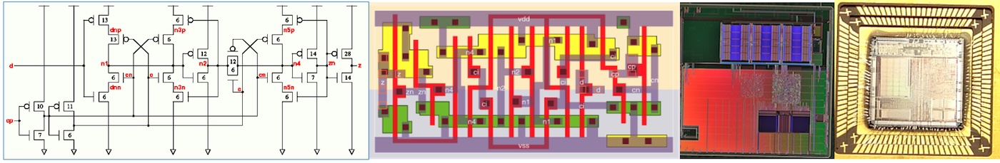
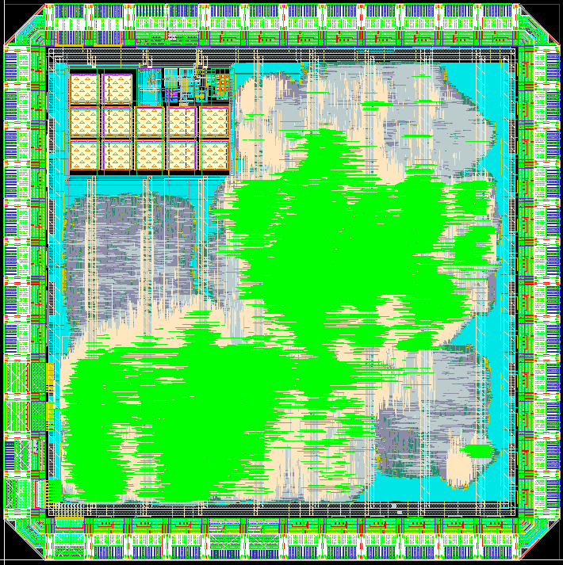
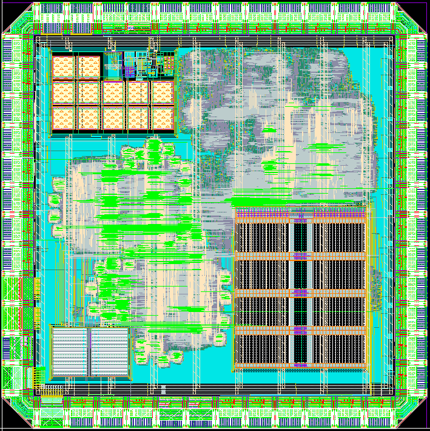
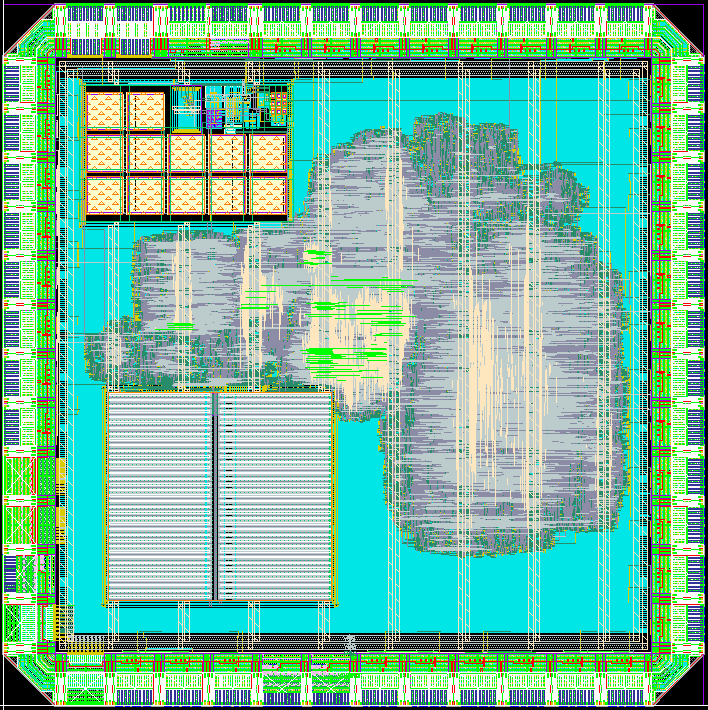
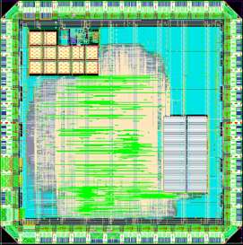
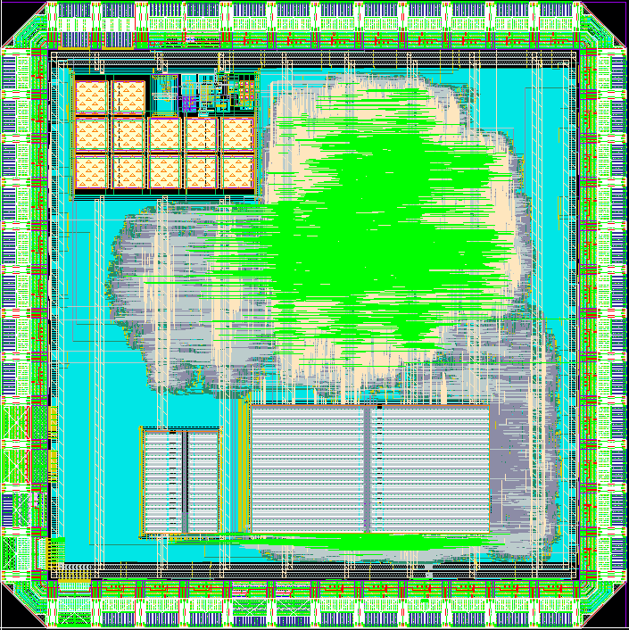
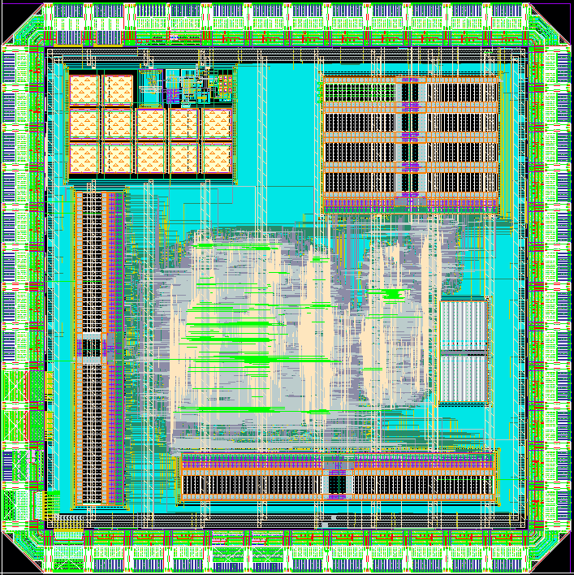
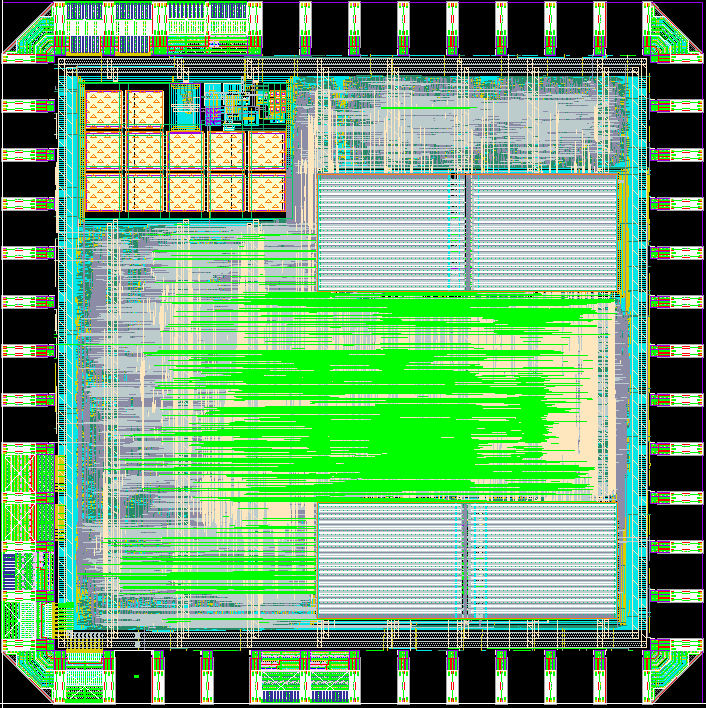
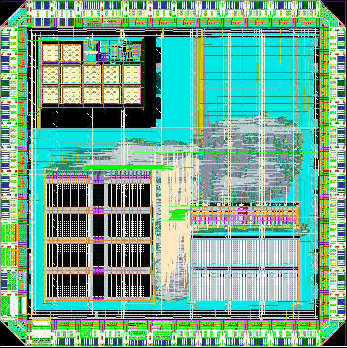

ELEC70142 Digital VLSI (SoC) Design - TAPEOUT 2026

This is the results of a new module offered to a selected group of 32 MEng Year 4 students between October 2025 and mid-January 2026. Students formed 8 groups of 4 and produced 8 individual designs.
Students used Cadence tools throughout, including Genus for synthesis, Innovus for placement and routing, Virtuoso for layout editing and viewing, Xcelium for simulation, Calibre for verification, and Modus for design-for-test and ATPG. All 8 chips were designed for TSMC 65nm CMOS low power process.
Each team was provided with a custom designed PLL operating with a 25MHz external clock and a maximum internal clock frequency of 250MHz. Available silicon area is 1mm x 1mm in a 44 pin JLCC packaging. All chips were designed to be easily testable via a purpose-designed test rig hooked up to one or two FPGA boards (which drive and/or emulate the chip under test). The following provides a brief description and the layout for each design. All eight designs have been taped out at the end of February via EuroPractice/IMEC. The fabricated chips are returned to us at the beginning of June for testing.
The course materials can be found here.







